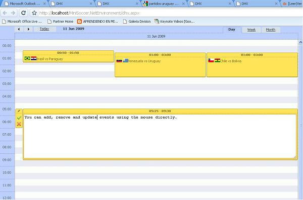
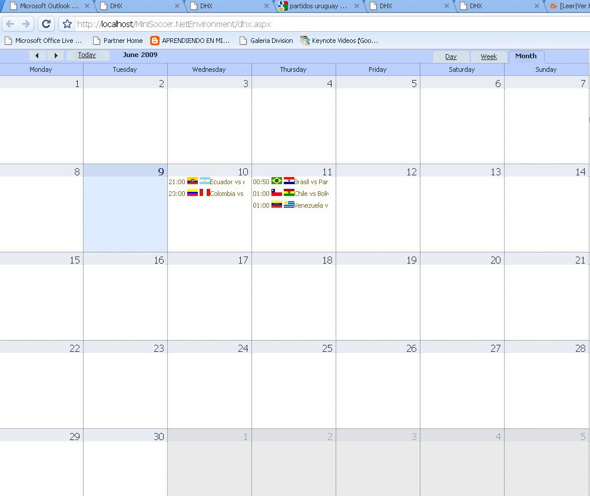

When to use it?If you want to show a serie of chronological events by day, week or month probably this is the control that will fit your needs. What does it look like?  How to use it?The scheduler control is available in the GeneXus toolbox as many other controls. If you want to use it:
How must the LoadObjectEvents Data Provider look like?This DataProvider is in charge of loading the events of a given period. Must have the following parameter: parm(&dateFrom, &dateTo,&events); // &dateFrom and &dateTo must be Date And the Data Provider's SDT (&events) must be of type SchedulerEvents. Example 1: Loading a set of fixed dataThis is the Data Provider used to show the previous screenshots:
CalendarEvents
{
Items
{
event
{
Id = "1"
Notes = "<img src='http://i.conmebol.com/banderas/VEN_flag_ssm.gif' /> <img src='http://i.conmebol.com/banderas/URU_flag_ssm.gif' />Venezuela vs Uruguay"
StartTime = ctot("06/11/2009 01:00 AM")
EndTime = ctot("06/11/2009 03:00 AM")
}
event
{
Id = "2"
Notes = "<img src='http://i.conmebol.com/banderas/COL_flag_ssm.gif' /> <img src='http://i.conmebol.com/banderas/PER_flag_ssm.gif' />Colombia vs Peru"
StartTime = ctot("06/10/2009 11:00 PM")
EndTime = ctot("06/10/2009 11:45 PM")
}
event
{
Id = "3"
Notes = "<img src='http://i.conmebol.com/banderas/ECU_flag_ssm.gif' /> <img src='http://i.conmebol.com/banderas/ARG_flag_ssm.gif' />Ecuador vs Argentina"
StartTime = ctot("06/10/2009 09:00 PM")
EndTime = ctot("06/10/2009 11:00 PM")
}
event
{
Id = "4"
Notes = "<img src='http://i.conmebol.com/banderas/BRA_flag_ssm.gif' /> <img src='http://i.conmebol.com/banderas/PAR_flag_ssm.gif' />Brasil vs Paraguay"
StartTime = ctot("06/11/2009 00:50 AM")
EndTime = ctot("06/11/2009 01:50 AM")
}
event
{
Id = "5"
Notes = "<img src='http://i.conmebol.com/banderas/CHI_flag_ssm.gif' /> <img src='http://i.conmebol.com/banderas/BOL_flag_ssm.gif' />Chile vs Bolivia"
StartTime = ctot("06/11/2009 01:00 AM")
EndTime = ctot("06/11/2009 03:00 AM")
}
}
}
Example II: loading event from the databaseIf you have the events stored in the database you can write something like this:
CalendarEvents
{
items
{
event
where EventStart >= &dateFrom
where EventEnd <= &dateTo
{
Id = EventId
StartTime = EventStart
EndTime = EventEnd
Notes = EventDescription
AdditionalInformation = EventDetails
}
}
}
How to handle Scheduler user events?The Scheduler control expose four events: EventAdded, EventDeleted, EventUpdated, EventSelected These events are essential when you want to allow the user to create, update or delete events directly using the Scheduler control. When the Scheduler control raise one of these events it load the property CurrentEvent that is bound to a variable (by default the variable is called ¤tEvent). So, suppose you want to add the event to your data store when the control raise the EventAdded
Event gxCalendar1.EventAdded
&eventTrnBC.EventId = ¤tEvent.Id
&eventTrnBC.EventStart = ¤tEvent.StartTime
&eventTrnBC.EventEnd = ¤tEvent.EndTime
&eventTrnBC.EventDescription = ¤tEvent.Notes
&eventTrnBC.EventDetails = ¤tEvent.AdditionalInformation
&eventTrnBC.Save()
commit
EndEvent
Sample KB
|